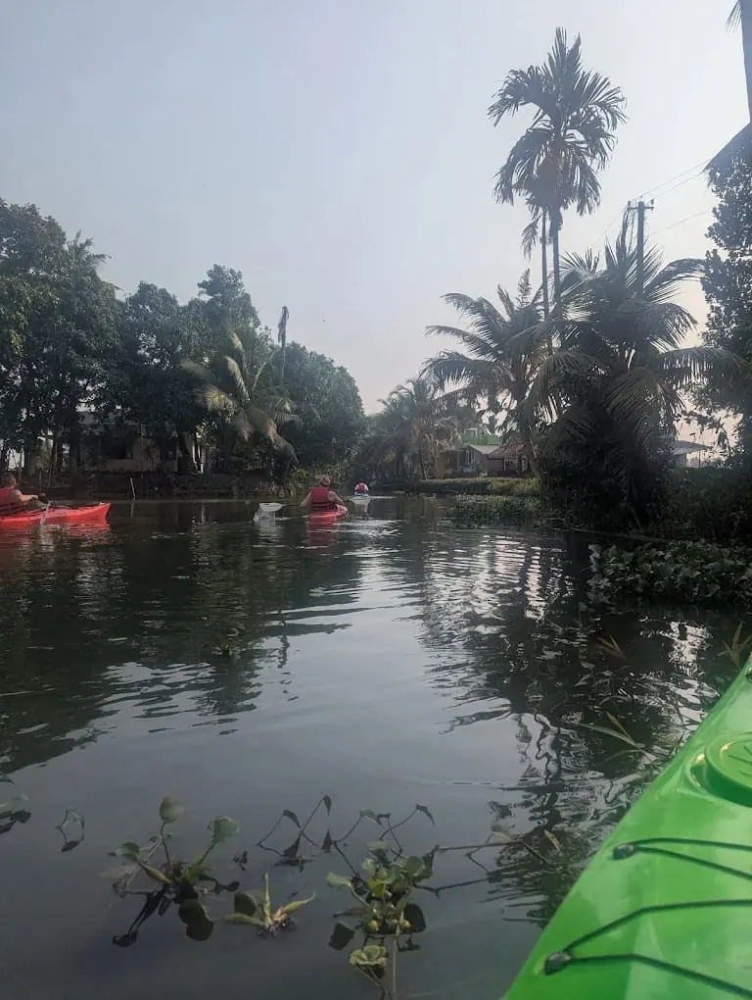

Pick yourhouron the backwater
Shikara rides and kayaking from Rajiv Boat Jetty. First boat at six in the morning, last one out at half past three for the sunset.
Sevendepartures a day
Every shikara ride leaves from Rajiv Boat Jetty and comes back there. The board shows what is on the water right now in Alleppey. Hover a departure to see the boat.
 Sunrise CruiseMorning tea or coffee
3 HRS₹1,500 / 2
Scheduled
08:00
Sunrise CruiseMorning tea or coffee
3 HRS₹1,500 / 2
Scheduled
08:00
 Half Day Tour with BreakfastKerala breakfast, Tea or coffee
4 HRS₹2,300 / 2
Scheduled
08:00
Half Day Tour with BreakfastKerala breakfast, Tea or coffee
4 HRS₹2,300 / 2
Scheduled
08:00
 Full Day Tour with Breakfast & LunchKerala breakfast, Lunch, veg or non-veg, Tea or coffee
8 HRS₹4,600 / 2
Scheduled
09:00
Full Day Tour with Breakfast & LunchKerala breakfast, Lunch, veg or non-veg, Tea or coffee
8 HRS₹4,600 / 2
Scheduled
09:00
 Breakfast CruiseKerala breakfast, Tea or coffee
3 HRS₹1,800 / 2
Scheduled
13:00
Breakfast CruiseKerala breakfast, Tea or coffee
3 HRS₹1,800 / 2
Scheduled
13:00
 Lunch CruiseTea or coffee
3 HRS₹1,800 / 2
Scheduled
15:30
Lunch CruiseTea or coffee
3 HRS₹1,800 / 2
Scheduled
15:30
 Sunset CruiseTea or coffee with snacks
3 HRS₹1,600 / 2
Scheduled
ANY
Sunset CruiseTea or coffee with snacks
3 HRS₹1,600 / 2
Scheduled
ANY
 Regular CruiseTea or coffee with snacks
3 HRS₹1,500 / 2
On request
Regular CruiseTea or coffee with snacks
3 HRS₹1,500 / 2
On requestFares are for two guests · each extra guest ₹100–₹150 per hour · times in IST




Sunriseor sunset?
Drag across the photo. Mornings are cool, still and pink. Evenings turn the whole lake gold.

Jetty tolake and back
The classic three-hour loop: out past the Snake Boat Race course, across Vembanad Lake and home through Vilakkumaram. Longer tours add villages, canals and paddy fields.
Seen from on board
- Rajiv Boat Jetty
- Snake Boat Race starting point
- Snake Boat model
- Snake Boat Race finishing point
- Vembanad Lake
- SAI (Sports Authority of India) centre
- C Block
- Vilakkumaram
- Back to Rajiv Boat Jetty
Your seatfor three hours
Tap the gold markers to look around a Kalyani shikara.
Paddle thecanals yourself
Swap the cushions for a paddle. Kayak sessions go into the narrow village canals and out onto the lake at sunrise and at sunset.
Questionsfrom the jetty
What people ask us most before they step on board.
Where do we get on the boat?
At Rajiv Boat Jetty, Alappuzha. Every departure starts and ends there. We send the exact spot on WhatsApp when we confirm.
Which hour should we pick?
For soft light and a quiet lake, the 6:00 Sunrise Cruise. For food on board, a breakfast departure or the full day. For colour in the sky, the 3:30 Sunset Cruise.
How does the fare work?
Each fare covers two people. Every extra guest adds ₹100 an hour on the three-hour rides and ₹150 an hour on the half day and full day.
Can we go at our own time?
Yes. The Regular Cruise is any three hours you like, at the same fare as the sunrise ride. Tell us your start time when you book.
How do we book?
Fill in the boarding pass on this page and send it on WhatsApp, or call the jetty desk. We reply to confirm the slot.
Print yourboarding pass
Pick a departure, a date and how many of you are coming. The fare updates as you go, and the pass goes to us on WhatsApp.